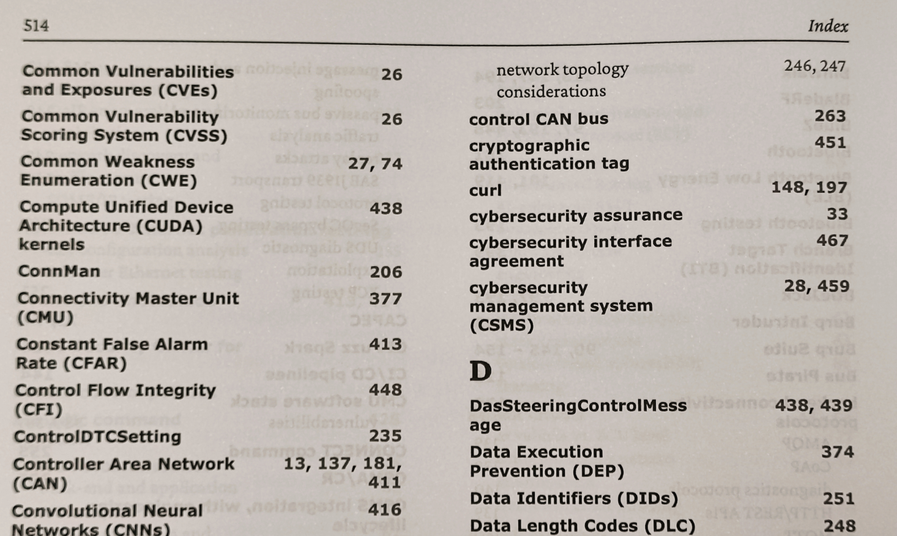
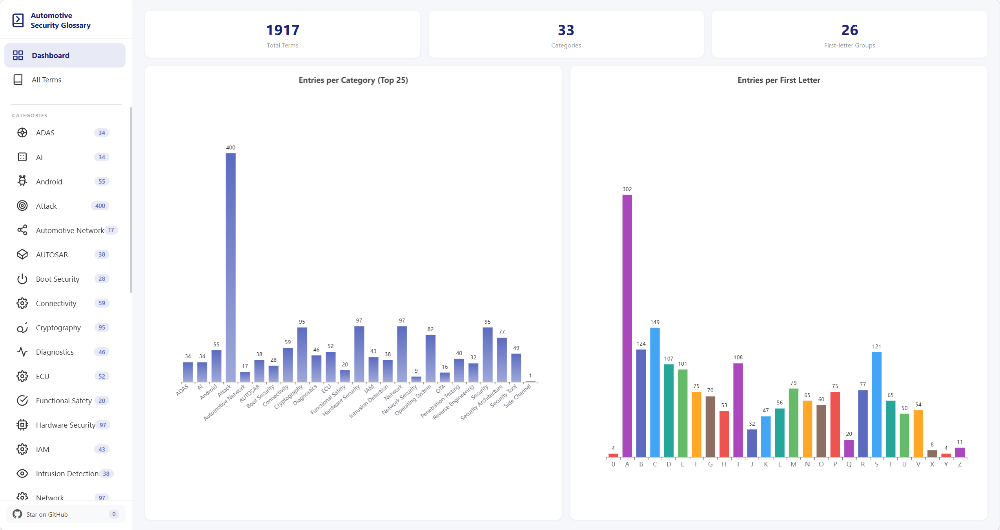
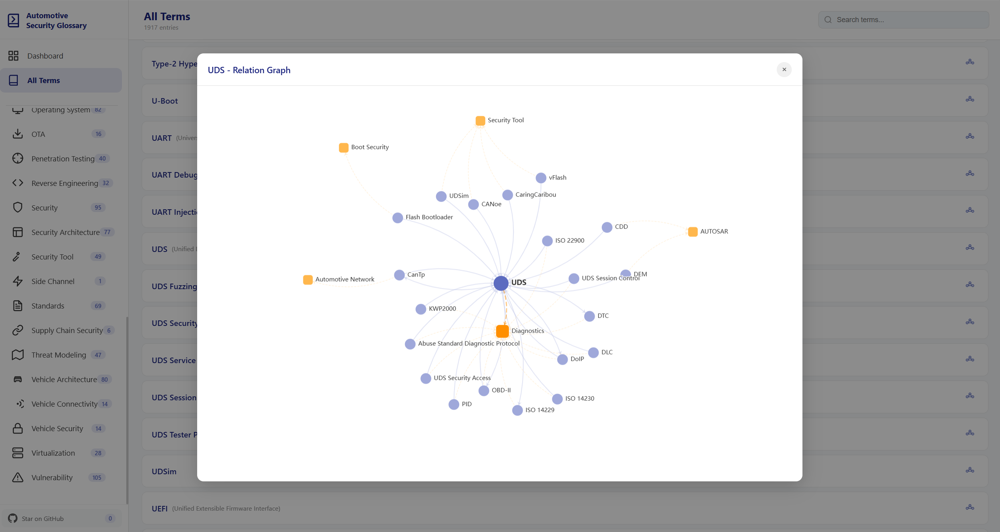

车联网安全基础知识之术语(黑话)集
车联网安全基础知识之术语(黑话)集
背景
上周，参加“2026智能汽车安全技术创新论坛”，很荣幸获赠了演讲嘉宾Dennis Kengo Oka的最新著作《Offensive Automotive Cybersecurity: An engineering handbook for exploiting modern automotive platforms》。会间与Dennis交流了渗透测试和书籍编写的心得，收获颇丰。
当晚回家后，快速翻阅了全书——厚厚500多页，内容详实，既有基础理论，也有实践案例，书末还附有长达18页的术语字典附录。刚开始以为是作者特意留下的贴心设计，方便读者随时查阅专业名词，后来翻看Packt出版社的其他书籍，才发现这似乎是他们惯常的编排方式，只是之前一直没注意到。

但这让我想起一直想写的系列文章之一“车联网安全基础知识之术语”——实在是汽车圈”黑话”太多，T-BOX、CAN、TT、PP、SOP之类的缩写和行话层出不穷。对初学者来说却是一道道门槛。
其实材料很早就开始搜集了，当时还没有大模型，全靠“古法收集”——翻标准、读论文、看博客，遇到一个记一个。但术语整理工作量大，几年下来始终没能成型。如今AI生产力日益成熟，便尝试借助AI来生成术语集合。
Automotive-Security-Glossary 项目
基于之前积累的资料和与ChatGPT的对话记忆，很快构建了第一版，并发布在：https://github.com/automotive-security/Automotive-Security-Glossary。
最初呈现的只是一个按字母顺序排序的简单术语集，虽便于查找单个术语，但对拓展知识体系帮助有限。因此进一步搭建了一个网站，既保留字典排序，也支持按类别分类展示，方便从不同维度学习和理解。
目前收录了33类，1900+个术语。

同时，还通过构建术语之间的关联关系，制作了简单的知识图谱，希望能更直观地呈现领域知识结构。

欢迎访问 https://autosec-glossary.delikely.eu.org 查看。
维护征集
术语数量庞大，难免有遗漏或错误，欢迎通过GitHub Issue等方式指正。也欢迎感兴趣的朋友一起参与共建，发我你们的GitHub ID，邀请大家一起维护这份”汽车安全术语集”——解锁行业黑话。
这份汽车安全术语库，等你来一起完善。
致谢
感谢Dennis Kengo Oka先生惠赠著作与交流启发，以及Vincent与Dennis在项目过程中的支持与反馈。